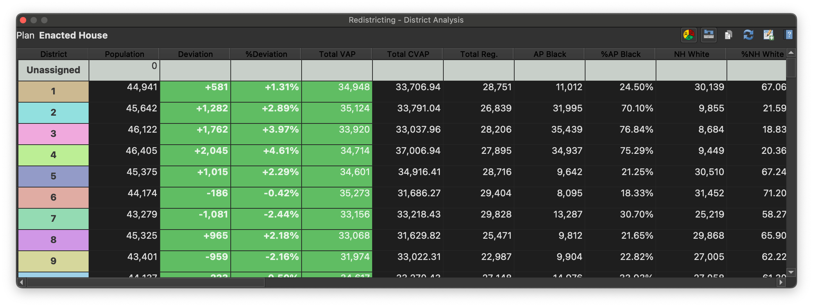
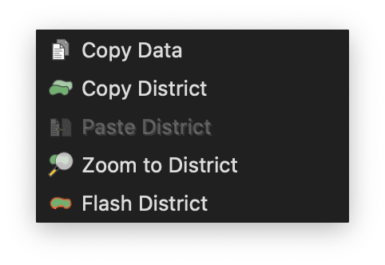
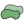

Data Table Window¶
The data table window provides demographics and metrics for each district in your plan. It shows the total population for each district, the totals for each additional population total in your plan and the the totals for each of the demographic date fields you’ve added. In addition, it shows the population deviation as an absolute and as a percentage of the total population. If the district falls without the allowed deviation, the deviation figures are displayed on a green background. The data table also shows select compactness scores for each district.
Context Menu¶
The data table window provides a context menu that can be used to access additional functions.
 |
Copy district assignments to the clipboard. |
Paste district assignments from clipboard into plan, first setting geography currently assigned to the district back to unassigned, and then assigning pasted geographies to the district. |
|
Zoom the map canvas to the bounding box of the district. |
|
|
Flash the district on the canvas. |
Copy selected data from the data table window to the clipboard. |